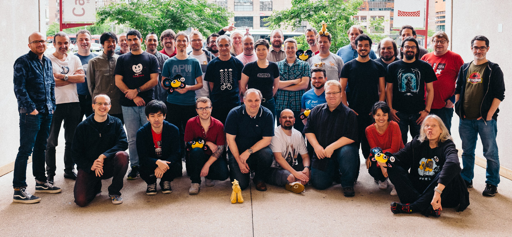
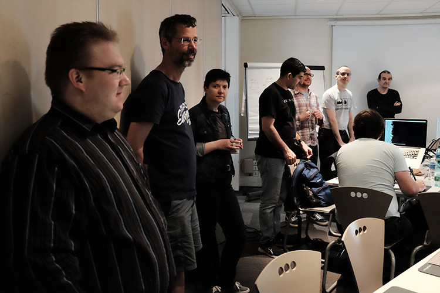
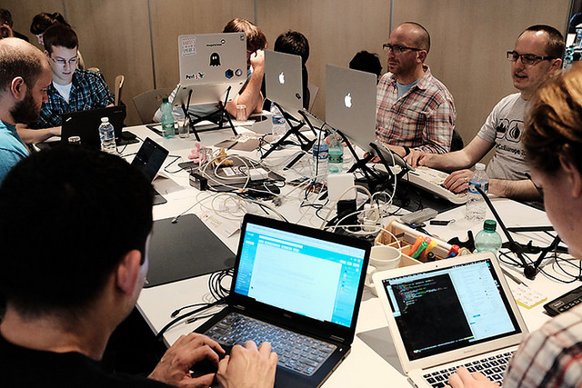
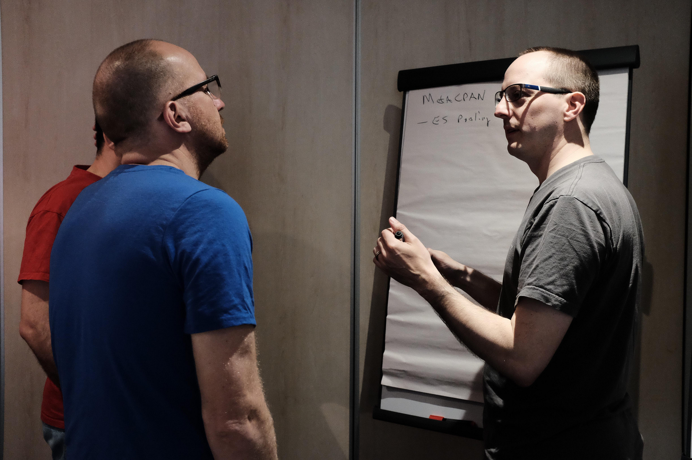
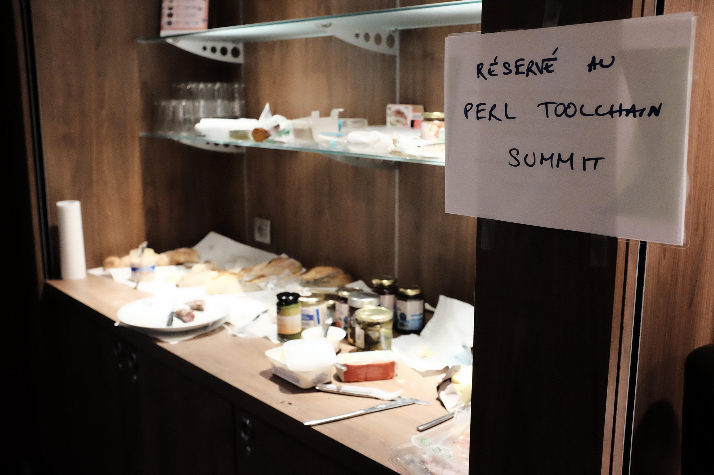
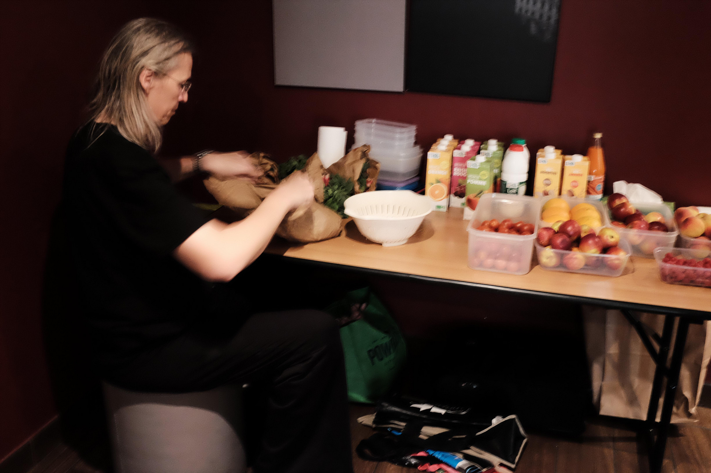
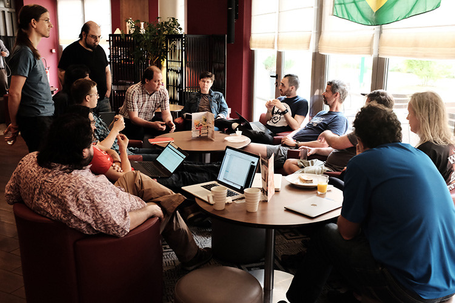
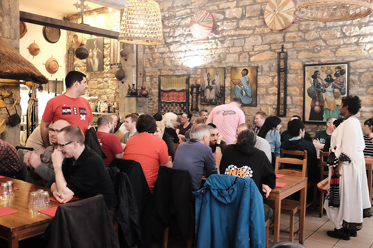

Attending the Perl Toolchain Summit
Olaf Alders
Toronto Perl Mongers
May 31, 2018
The Perl Toolchain Summit
April 19 - 22, 2018
Oslo, Norway
The Rules of this Presentation
Rule #1: Feel free to interrupt me
Rule #2: That's it
Some background on PTS/QAH
Event history (QA Hackathon):
- Oslo, 2008
- Birmingham, 2009
- Vienna, 2010
- Amsterdam, 2011
- Paris, 2012
- North West England, 2013
- Lyon, 2014
- Berlin, 2015
- Rugby, 2016
Event history (Perl Toolchain Summit):
- Lyon, 2017
- Oslo, 2018
- Formerly Perl QA Hackathon
- No longer really descriptive of the event
- Made fundraising difficult
A new sponsor of note was added last year.
MaxMind!


Some attendees:
- Andreas Koenig (ANDK)
- Germany
- PAUSE
- Tatsuhiko Miyagawa (MIYAGAWA)
- US
- Plack
- cpanm
- carton
- Kenichi Ishigaki (ISHIGAKI)
- Japan
- Parse::PMFile
- PAUSE
- Mickey Nasriachi (MICKEY)
- The Netherlands
- MetaCPAN::Client
- Sawyer (XSAWYERX)
- The Netherlands
- Perl Pumpkin
- Ref::Util
- Joel Berger (JBERGER)
- US
- Mojolicious
- Philippe Bruhat (BOOK)
- France
- Test::Requires
- Git::Repository
- App::Wallflower
- Karen Etheridge (ETHER)
- Canada
- Moose
- misc modules
- Doug Bell (PREACTION)
- US
- CPANTS
- CPAN::Testers::API
- US
- H.Merijn Brand (HMBRAND)
- Text::CSV_XS
- Graham Knop (HAARG)
- The Netherlands
- Moose/Moo
- local::lib
- travis-perl-helpers
- Test::Needs
- The Netherlands
- Breno G. de Oliveira (GARU)
- Brazil
- Data::Printer
- Babs Veloso
- Brazil
- UI and UX for MetaCPAN, cpan.org and others
- Αριστοτέλης Παγκαλτζής (ARISTOTLE)
- Germany
- Plack::Middleware::Rewrite
- Hash::MultiValue
- Plack::Middleware::SignedCookies
- Germany
- Leo Lapworth (LLAP)
- UK
- perl.org
- Shoichi Kaji (SKAJI)
- Japan
- App::cpm
- Paul Johnson (PJCJ)
- Switzerland
- Devel::Cover
- Babs Veloso
- Brazil
- perl.org redesign
- MetaCPAN UI
- Tina Müller (TINITA)
- Germany
- YAML::LibYAML
- Inline::C
- David Golden (DAGOLDEN)
- US
- HTTP::Tiny
- File::pushd
- Lots of *::Tiny modules
- Chad Granum (EXODIST)
- US
- Test2
Let's crunch the numbers
A sample of our code at MaxMind depends on 7,391 Perl modules
TPS attendees in 2017 had maint or co-maint on 11,579 CPAN modules
The intersection of TPS module perms and our CPAN deps is 1,742
PTS had the power to fix and release bugs in 23.57% of our CPAN deps
| Authors | Modules | Covered | % |
|---|---|---|---|
| PTS | 11,579 | 1,742 | 23.57% |
MaxMind Devs vs PTS
| Authors | Modules | Covered | % |
|---|---|---|---|
| PTS | 11,579 | 1,742 | 23.57% |
| MM | 5,394 | 1,025 | 13.87% |
The MM team contains one outlier. If we remove this developer from the mix, the numbers look quite different.
| Authors | Modules | Covered | % |
|---|---|---|---|
| PTS | 11,579 | 1,742 | 23.57% |
| MM-FLORA | 1,267 | 294 | 3.98% |
Now, how far does our coverage increase if we combine the power of PTS with the power of MaxMind?
| Authors | Modules | Covered | % |
|---|---|---|---|
| MM+PTS | 13,883 | 2,013 | 27.24% |
| PTS | 11,579 | 1,742 | 23.57% |
| MM | 5,394 | 1,025 | 13.87% |
This event also helps me
This event provides
- Dedicated, focussed, distraction-free work time
- You don't have to twist my arm to spend a few days in Europe
Morning Standup

The MetaCPAN Table

Whiteboarding

You can never leave
- We all stay in the same hotel
- We (now) all have our own rooms
- When working from a hotel, breakfast and lunch are in the hotel
- We go out for group dinners some nights
- We usually have communal dinner in the hotel one night
- People hack in the hotel until the late hours, sometimes/often in the hotel bar


Group Discussions

Group Meal

My focus in 2017:
- 06perms
- Speeding up Travis CI build times
06perms
- Make the data available via API
- Make the data available via MetaCPAN front end
What is 06perms?
What is PAUSE?
What is CPAN?
- A repository of Perl modules
- Modules are uploaded as archives (.tar.gz, .zip)
- Modules are indexed by PAUSE
What is a Module?
- A Perl package
- Can be a file, but can also be an inner package
- It needs to have a
packagedeclaration, or it's not a module - You can upload scripts, but they're kind of a side effect of modules
What is PAUSE?
PerlAuthorsUploadSErver- Unpacks archives and assigns permissions to them
- Tracks data in a MySQL backend
- Produces text files which become part of CPAN
CPAN + PAUSE
- A repository which anyone can mirror
- author info
- latest indexed modules (02packages)
- comprehensive list of author + module permissions (06perms)
- MetaCPAN and search.cpan.org depend heavily on these files
What is 02packages
- module name
- version
- unique path to file (you cannot re-upload a file)
Data::FormValidator 4.88 D/DF/DFARRELL/Data-FormValidator-4.88.tar.gz
What is 06perms?
It's found at modules/06perms.txt in CPAN mirrors.
Data::FormValidator,DFARRELL,c
Data::FormValidator,MARKSTOS,c
Data::FormValidator,OALDERS,c
Data::FormValidator,TJMATHER,f
Data::FormValidator::Any,MARKSTOS,c
Data::FormValidator::Constraints,DFARRELL,c
Data::FormValidator::Constraints,MARKSTOS,f
Data::FormValidator::Constraints,OALDERS,c
Data::FormValidator::Constraints,TJMATHER,c06perms results
- The work which had begun at the previous Lyon hackathon was finally merged
- A very basic UI was added to expose this data on the front end
- Babs Veloso and Neil Bowers proposed some UI improvements which can be tackled at some future time
- Use the permissions link on the left sidebar at MetaCPAN
Travis
- Our build times were extremely slow (up to 45 minutes)
- This problem is amplified at a hackathon
- Travis support was phenomenal
However...
- adding more concurrent builds will not make a slow build finish any faster
Bottlenecks:
- Module installs were running serially
- Modules always installed
- Tests running serially
- Devel::Cover builds were slowing down the reporting
- Failing at the last possible moment
The Fixes
Module installs were running serially
Module installs were running serially
- Use App::cpm
before_install:
- cpanm -n App::cpm Carton
install:
- cpm install -L $PERL_CARTON_PATH --resolver $CPAN_RESOLVERModules always installed
Modules always installed
- Use a Travis cache dir
With carton:
cache:
directories:
- localtravis-perl helpers (and others):
cache:
directories:
- ~/perl5Travis Caching Caveats
- Travis caches are not network-local
- If you store archives larger than a few hundred megabytes in the cache, it's unlikely that you'll see a big speed improvement
Tests running serially
Tests running serially
- Run tests in parallel
$(test-jobs)is provided bytravis-perl
script:
- carton exec prove -lr -j$(test-jobs) tLet's apply this to CPAN installs
cpm install --workers $(test-jobs)
Devel::Cover builds were slowing down the reporting
Use a Build Matrix
- exclude coverage runs from success/failure reporting
env:
matrix:
- USE_CPANFILE_SNAPSHOT=false CPAN_RESOLVER=metadb PERL_CARTON_PATH=$TRAVIS_BUILD_DIR/no-snapshot HARNESS_VERBOSE=1
- USE_CPANFILE_SNAPSHOT=true
- USE_CPANFILE_SNAPSHOT=true COVERAGE=1
matrix:
allow_failures:
- env: USE_CPANFILE_SNAPSHOT=true COVERAGE=1Force Devel::Cover to exclude directories
env:
global:
- DEVEL_COVER_OPTIONS="-ignore,^local/"Failing at the last possible moment
Let's fail faster!
matrix:
fast_finish: trueThis kicks in under either of the following conditions:
- only jobs in
allow_failuresare remaining - one job has already failed
What happened this year:
- Upgraded our vagrant developer boxes from Debian Wheezy to Debian Stretch
- Upgraded our Puppet configuration 2 major versions
- Worked on capacity in preparation for the retirement of search.cpan.org
Who gets invited?
- There are three tiers
- Tier 1: Made up of core attendees
- Tier 2: invited by tier 1
- Tier 3: some combination of invited by the organizers and I'm honestly not sure
How can you get into a tier?
- Tier 1: attend many years of PTS or lead a Perl infrastructure project
- Tier 2: get invited by tier 1
- Tier 3: there is some flex here
- Get involved in projects or modules which are critical to Perl infrastructure
- Working on core Perl stuff is not as crucial, since there's now a P5P hackathon.
Sponsorships available for:
- Transportation
- Most meals
- Hotel
Can your company sponsor?
- New sponsors are always welcome
- Multiple tiers
- Perks include:
- being mentioned in all blog posts about the event
- a featured blog post for your company
- having your company poster feature prominently in photographs of the event
- supporting continued health and growth of open source projects which many people and companies rely on
Questions?